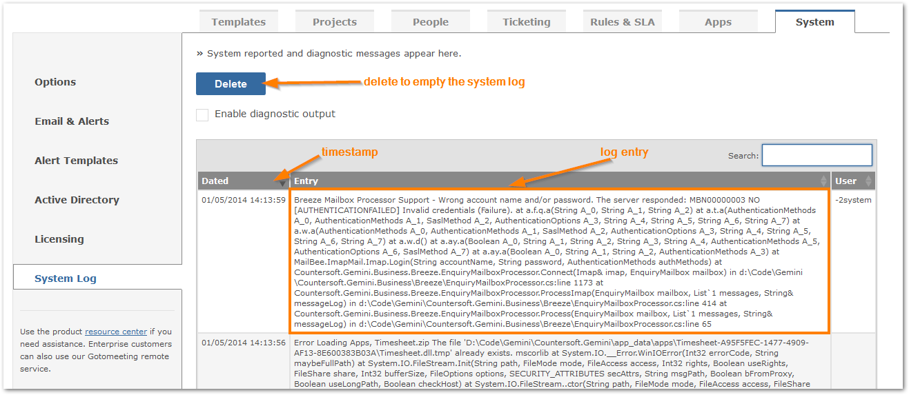

In addition to sending emails to the administrator email account, any system-level errors that are encountered are written to the System Log. All entries have a timestamp, verbose description of the error and, if the error was initiated from user action, the user associated with the error.
